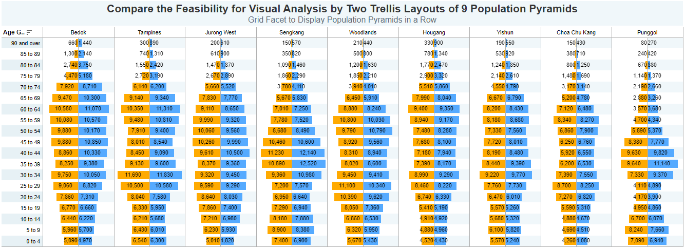
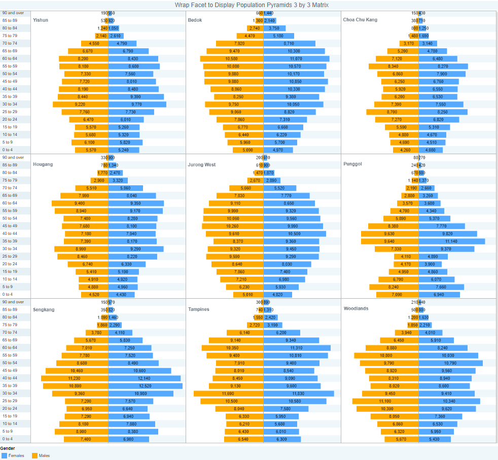

Code
pacman::p_load(tidyverse)
library(plotly)Tan Zhi Hao
January 27, 2023
January 28, 2023
This exercise is based on a take-home exercise 1 submission prepared by a classmate. The peer submission will be critiqued in terms of clarity and aesthetics, and the original design will be remade using the data visualization principles and best practice learnt in Lesson 1 and 2.
The dataset used in take-home exercise 1 and 2 is a CSV file extracted from Singstat website named ‘respopagesextod2022’ and processed by RStudio tidyverse family of packages and visualized by ggplot2 and its extensions.
The code chunk below uses p_load() of pacman package to check if tidyverse packages are installed in the computer. If they are, then they will be launched into R.
The code chunk below imports respopagesextod2022.csv from the data folder into R by using read_csv() of readr and save it as an tibble data frame called data.
# A tibble: 6 × 7
PA SZ AG Sex TOD Pop Time
<chr> <chr> <chr> <chr> <chr> <dbl> <dbl>
1 Ang Mo Kio Ang Mo Kio Town Centre 0_to_4 Males HDB 1- and 2-Room … 0 2022
2 Ang Mo Kio Ang Mo Kio Town Centre 0_to_4 Males HDB 3-Room Flats 10 2022
3 Ang Mo Kio Ang Mo Kio Town Centre 0_to_4 Males HDB 4-Room Flats 10 2022
4 Ang Mo Kio Ang Mo Kio Town Centre 0_to_4 Males HDB 5-Room and Exe… 30 2022
5 Ang Mo Kio Ang Mo Kio Town Centre 0_to_4 Males HUDC Flats (exclud… 0 2022
6 Ang Mo Kio Ang Mo Kio Town Centre 0_to_4 Males Condominiums and O… 50 2022The code chunk below orders the Age groups sequentially, by planning area, age group and sex.
pop_data$AG <- gsub("_",
" ",
pop_data$AG,
fixed = TRUE)
ag_order <- c("0 to 4", "5 to 9", "10 to 14", "15 to 19", "20 to 24", "25 to 29", "30 to 34", "35 to 39", "40 to 44", "45 to 49", "50 to 54", "55 to 59", "60 to 64", "65 to 69", "70 to 74", "75 to 79", "80 to 84", "85 to89", "90 and over")
pop_ordered <- pop_data %>%
group_by(`PA`, `AG`,`Sex`) %>%
summarise(`Count` = sum(`Pop`)) %>%
mutate(AG = factor(AG, levels = ag_order)) %>%
arrange(AG) %>%
ungroup()It looks like ZeXeong selected the planning areas based on the top 9 population sizes. The code chunk below filters these 9 planning areas.
# A tibble: 6 × 4
PA AG Sex Count
<chr> <fct> <chr> <dbl>
1 Bedok 0 to 4 Females 4970
2 Bedok 0 to 4 Males 5090
3 Choa Chu Kang 0 to 4 Females 4080
4 Choa Chu Kang 0 to 4 Males 4260
5 Hougang 0 to 4 Females 4430
6 Hougang 0 to 4 Males 4520
What works:
(A) As there are only 9 planning areas, this grid facet to display the pyramids in a row works as we can clearly see the side by side comparison of each planning area.
(B)The planning area labels are clearly stated at the top of each planning area.
What doesn’t work and why:
(A) Title
The title does not provide sufficient detail about the data being visualized. It simply states ‘Compare the Feasibility for Visual Analysis by Two Trellis Layouts of 9 Population Pyramids’. It does not say the data is for which country’s population and for which year. A more appropriate title will be ‘Age-Sex Pyramid for Selected Planning Areas in Singapore, 2022’
(B) Axes
The x-axis does not have a label telling us what is the information being shown. It is also not shown even at the bottom of the dashboard. The legend at the bottom shows us which color represents which sex but it is insufficient to tell us is this a count or proportion, nor does it tell us the units. In general, if the word ‘count’ is used (e.g. Male Count), this tells us it is a number.
(C) Grid
With an x-axis values, it would also be good to include vertical grid lines as the x-axis is in continuous numbers.
What doesn’t work and why:
(A) Colour
The colors used to represent Male and Female are not intuitive. By convention, Blue is used to represent Male and Red/Pink is used to represent Female. Of course, this is only based on convention and not a hard rule, but for people who are used to the conventional colors, at first glance, we may think that the right side of the pyramids are representing Males.
The horizontal alternating color shading (i.e. grey-white-grey-white) does not seem to be necessary as the age groups are in ‘discrete horizontal bars’ and not ‘continuous’. The alternating shading also seem to be missing for the left side of each pyramid, which may be distracting.
(B) Data labels
The labels for the count being displayed overlapping the bars can make the charts very messy. It may also be hard to read the numbers for the top of the pyramid where the bars are short. Some solutions are to either display the numbers outside the bar (non-overlapping), change the numbers to thousands using ‘k’, or not display the numbers at all since there is already a tooltip displaying information as you hover over the bars.
Changed title to ‘Age-Sex Pyramid in Singapore, 2022’.
Added a x-axis label ‘Population Count’ as well as the x-axis values of up to 15k on each side in steps of 5k as well as grid lines for more clarity.
Changed the colors of the bars to Blue for ‘Males’ and Pink for ‘Females’. Removed alternating shading.
Removed count value label display for each bar.
In the tooltip, unnecessary information is removed. When hovering over ‘Females’, only the AG, sex and female count is shown and similarly for ‘Males’.
AgSxPyr_t9 <- ggplot(t9_only, aes(x = AG, y = Count, fill = Sex)) +
geom_bar(data = subset(t9_only,
Sex == "Males"),
aes(x = AG,
y = -Count,
fill = Sex),
stat = "identity"
) +
geom_bar(data = subset(t9_only,
Sex == "Females"),
aes(x = AG,
y = Count,
fill = Sex),
stat = "identity"
) +
scale_y_continuous(breaks = seq(-15000, 15000, 5000),
labels = paste0(
as.character(
c(seq(15, 0, -5),
seq(5, 15, 5))),
"k")) +
coord_flip() +
facet_grid(~ PA) +
labs (y = "Population Count",
x = "Age Group",
title = 'Age-Sex Pyramid in Singapore, 2022') +
theme_bw() +
theme(axis.ticks.y = element_blank()) +
scale_fill_manual(values = c("Males" = "lightblue",
"Females" = "lightpink"))
ggplotly(AgSxPyr_t9,
session = "knitr")
What works and doesn’t work in point 3.1.1.1 for the Grid Facet in a row all apply to this 3x3 Trellis as well.
What works and doesn’t work in point 3.1.1.2 for the Grid Facet in a row all apply to this 3x3 Trellis as well.
In addition, it would be good to remove unnecessary information to avoid confusion in the tooltip such as the ‘Column along PA’ and ‘Row along PA’. We can also remove ‘Male Population’ when hovering over Female and remove ‘Female Population’ when hovering over ‘Male’
Changed title to ‘Age-Sex Pyramid in Singapore, 2022’.
Added a x-axis label ‘Population Count’ as well as the x-axis values of up to 15k on each side in steps of 5k as well as grid lines for more clarity.
Changed the colors of the bars to Blue for ‘Males’ and Pink for ‘Females’. Removed alternating shading.
Removed count value label display for each bar.
In the tooltip, unnecessary information is removed. ‘Column along PA’ and ‘Row along PA’ are removed. When hovering over ‘Females’, only the AG, sex and female count is shown and similarly for ‘Males’.
The labels for Planning Area are now at the middle top of each micro chart in the Trellis display.
AgSxPyr_t9 <- ggplot(t9_only, aes(x = AG, y = Count, fill = Sex)) +
geom_bar(data = subset(t9_only,
Sex == "Males"),
aes(x = AG,
y = -Count,
fill = Sex),
stat = "identity"
) +
geom_bar(data = subset(t9_only,
Sex == "Females"),
aes(x = AG,
y = Count,
fill = Sex),
stat = "identity"
) +
scale_y_continuous(breaks = seq(-15000, 15000, 5000),
labels = paste0(
as.character(
c(seq(15, 0, -5),
seq(5, 15, 5))),
"k")) +
coord_flip() +
facet_wrap(~ PA) +
labs (y = "Population Count",
x = "Age Group",
title = 'Age-Sex Pyramid in Singapore, 2022') +
theme_bw() +
theme(axis.ticks.y = element_blank()) +
scale_fill_manual(values = c("Males" = "lightblue",
"Females" = "lightpink"))
ggplotly(AgSxPyr_t9,
session = "knitr")